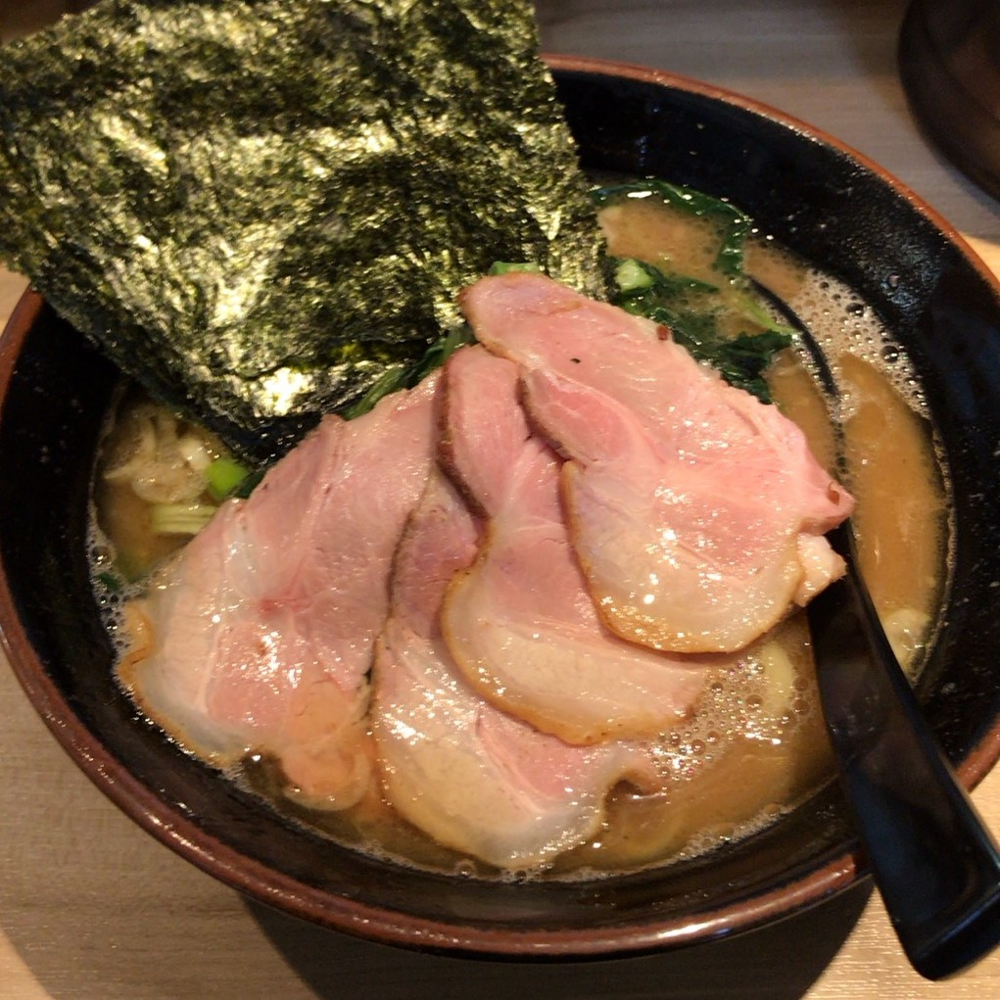

基本情報
名前:石井 健史（イシイ ケント）
出身地:大阪府枚方市
誕生日 12月6日
趣味
趣味は食べ歩きです。
大学に通っていた時は関西を中心に有名なラーメン屋に通っていました。
上の画像は、大学の近くにある「あくた川」という店のラーメンです。
この店に行ったことをきっかけに、家系ラーメンが大好きになりました。
京都に行く機会があればぜひ食べてみてください。
好きな食べ物

好きな食べ物はカレーです。1週間に1回以上は自分で作って食べています。
上の画像は大学の近くにあるカレー屋「カリル」のキーマカレーです。
スパイスカレーが特に好きなので、東京でもお店を探していってみようと思います。
最近頑張っていること

最近は自炊を頑張っています。
今までずっと実家暮らしで料理を作ってこなかったので、
包丁の扱いにも苦労しています(笑)
今後の目標は、上の画像のようなきれいなだし巻き卵を作りたいと思っています。